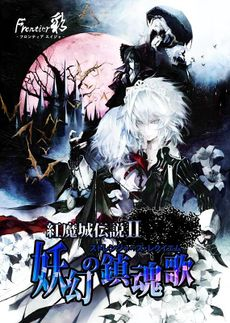

- Welcome to Touhou Wiki!
- Please register to edit. For assistance, check in with our Discord server or IRC channel.
Koumajou Densetsu II: Stranger's Requiem
Koumajou Densetsu II: Stranger's Requiem | |
|---|---|
|
 | |
| Developer |
Frontier Aja |
| Publisher |
Frontier Aja |
| Released |
Trial: 2010-09-19 (Reitaisai SP) |
| Genre |
Action Adventure Game |
| Gameplay |
Single-player |
| Platforms | |
| Requirements |
Intel R Core 2 Duo processor, 1 GB RAM, 64 MB VRAM, DirectX 9.0c, DirectSound |
Koumajou Densetsu II: Yougen no Chingonka (紅魔城伝説Ⅱ 妖幻の鎮魂歌 (ストレンジャーズ・レクイエム), lit. "Legend of Scarlet Devil Castle II: Stranger's Requiem") is a fan-made Touhou Project Castlevania-esque game created by Frontier Aja, featuring Sakuya Izayoi as the protagonist. It is a sequel to Koumajou Densetsu: Scarlet Symphony and features voice acting by professional seiyuu.
The English and French translation files for the story mode have been released for v1.02.
Gameplay[edit]
- Main article: Gameplay
Just like its predecessor, Stranger's Requiem plays as similarly as the classic Castlevania games - where you must thread through a series of increasingly hard stages filled with various enemies and a boss at the end of the stage.
Story[edit]
(Rough summary)
Some time after the events of the first game, Sakuya Izayoi returns from an errand for Remilia Scarlet involving a book, only to find the mansion empty. It isn't long before Yukari Yakumo appears and gives Sakuya a clue about where Remilia is and vanishes soon after. She sets out to look into Yukari's clue along the ruins of the castle long since destroyed, only to find it rebuilt. At its gate, she finds Hong Meiling tied up and gagged. As she figures out what Meiling is saying, Alice Margatroid comes flying down, at which point Sakuya assumes she did it. They fight and afterwards, Alice reminds Sakuya to untie Meiling, who reveals that she was kidnapped from the garden... while napping. Alice has an alibi of seeing her shopping earlier and reveals she's here due to strange energy she sensed. Sakuya then takes Meiling with on her quest.
Next they journey into the great hall, where they are stopped by Chen, who states she's there to stop their progress. This only affirms Sakuya's suspicions of Yukari's involvement in this incident. Sakuya tries to find some catnip but isn't able to, leading to a fight. Even after losing once, Chen's ready to fight again, letting slip Ran Yakumo's part in this. It takes a foxtail that Meiling found to get Chen to budge.
The next stop is the underground caverns, where along the way they run into Komachi Onozuka as somehow the Sanzu River runs through the caverns. She offers a trip across. Soon after, they find Youmu Konpaku laying in wait for an attack. Sakuya tries to ask her what's going on but Youmu makes it rather clear that they'd have to fight. Afterwards, Sakuya concludes she'd have to ask Youmu's mistress, Yuyuko Saigyouji.
After the caverns is the library, where at the end they find Patchouli Knowledge, collapsed and winded. She struggles to mention Remilia's name. Before Sakuya could ask more, Marisa Kirisame appears and when questioned, doesn't deny anything. Sakuya proceeds to "clean up someone else's castle". After the (challenging) fight, Marisa confesses she really didn't know anything and she only came due to the feeling akin to the first incident. She refuses Sakuya's offer to come with, preferring to read a book. Sakuya and Patchouli in turn accuse Marisa of using this to steal some books. Before the steal/borrow debate gets going, Alice reappears, revealing she was actually chasing after Marisa. The two blonde magicians bicker for a bit before Marisa leaves. Alice and Patchouli join the party after Patchouli puts things into perspective for Alice.
The Arena is next, where after fighting through it, they find Reimu Hakurei on the throne in the main Colosseum, who acts as if she's lord of this castle and tells Sakuya to leave. She refuses, resulting in a fight. Afterwards, Reimu basically states that Ran hired her to work at the castle and that Ran would know more about the incident than she does. She joins the party, revealing this incident is affecting all of Gensokyo, sucking away its spring.
As the party journeys through the clock tower, they notice signs of plants growing and branches of a huge tree being visible. At the end, they come across Ran, who reveals she's following a plan of Yukari's which is close to completion, and that the more Sakuya fights, the better. Sakuya doesn't seem to pay it much heed as she proceeds to fight. After the fight, Ran is about to resume fighting when Flandre Scarlet attacks and prepares to land a killing blow. Sakuya talks her out of it as Ran gives another cryptic remark on how fighting progresses their plan. She also mentions how it'd make Remilia happy as she remarks on her being done. She vanishes as Reimu makes a remark. Flandre asks to play with Reimu but Reimu convinces her to come with, saying it'd be more fun.
In the Cherry Blossom Tower, the growth of the giant tree is quite evident. At the top, they find the castle was built around the Saigyou Ayakashi as Yuyuko appears. She makes some very cryptic and rather threatening remarks, prompting a fight. Afterwards, Reimu senses Remilia and that Remilia is under a strange influence ("more vivid, evil... and covered in a stench of death, like a ghost"). Yuyuko makes one last cryptic remark before leaving.
The final stage is the top floor, where they find Remilia in the throne room. Sakuya senses she isn't herself as she babbles on about wanting to fight so that something can happen as she eggs Sakuya to attack her. After the fight, Yukari interrupts before Sakuya can do anything. Sakuya attacks her in her anger. Afterwards, Sakuya is about to resume fighting when Yukari revealing the goal of the plan: Giving Remilia the power of the Saiguyou Ayakashi. Remilia, struggling to contain the power challenges Sakuya to another fight. After the fight, a party is held around the tree, which is luckily not at full bloom. There's various remarks, including possible hook to an Imperishable Night-based game.
A few days after the incident, the Yakumos invite the party (with Remilia in it) to the SDC for a fireworks display. What they get instead is a challenging gauntlet with foes such as Lily White (Or a fairy that resembles her), the Three Fairies of Light, rematches with Chen and Ran, and an assorted bunch of midboss monsters. They find the separate areas being connected by gap spaces. In the grand throne room, they find Yukari who asks how they enjoyed the show, revealing this was her idea of fireworks. Remilia remarks on things lacking impact, sparking similar remarks from the others. Yukari in response, decides to oblige them, revealing that she was holding back the last time. Afterwards, they go to the Hakurei Shrine as Marisa, Flandre, Youmu, and Meiling partake in some danmaku fights with the rest watching and musing on things.
Additional Information[edit]
Fandom[edit]
- The game is unofficially referred to as "Touhouvania 2" in the western fandom.
- Castlevania Fighter is a boss rush game starring heroes and bosses from divers Castlevania games, including Reimu Hakurei and Sakuya Izayoi as playable characters.
External links[edit]
- Koumajou Densetsu II: Stranger's Requiem official website (Down for the time being)
- Frontier Aja official website
- Official translation patch - adds English and French translations to the game (There's temporary download location available while the official website is down)
- Updates for the game (under 紅魔城伝説II 妖幻の鎮魂歌)